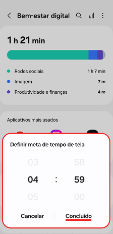

Tempo de Tela (Screen Time): É uma funcionalidade presente em smartphones e outros dispositivos que monitora e
relata o tempo que um usuário passa utilizando aplicativos e o dispositivo em geral. Seu objetivo é ajudar os
usuários a entenderem seus hábitos digitais e, se desejarem, gerenciar e limitar o tempo de uso.
